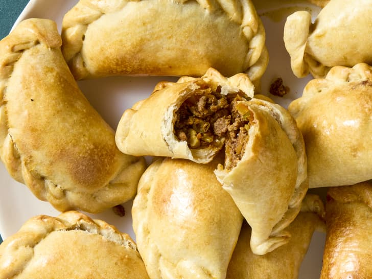

Empanadas

Argentinian empanadas are savory pastry turnovers filled with spiced ground beef, onions, eggs, and olives.
They are a traditional dish enjoyed across the country, often baked or fried, and served at family gatherings
and celebrations.
Ingredients
(8-10 empanadas, depending on size and filling)
- 2 tablespoons vegetable oil
- 1 large onion, finely chopped
- 500g (1 lb) ground beef
- 1 teaspoon paprika
- 1 teaspoon ground cumin
- 1 teaspoon salt
- 1/2 teaspoon black pepper
- 1/4 cup green olives, chopped
- 2 hard-boiled eggs, chopped
- 8-10 empanada dough discs (store-bought or homemade)
- 1 egg (for brushing, optional)
Steps
- Heat the oil in a skillet over medium heat.
- Add the chopped onion and cook until soft and translucent.
- Add the ground beef, breaking it up with a spoon as it cooks.
- Stir in the paprika, cumin, salt, and black pepper. Cook until beef is browned.
- Remove from heat and let it cool slightly.
- Mix in the chopped olives and hard-boiled eggs.
- Place a spoonful of filling in the center of each empanada dough disc.
- Fold the dough over to create a half-moon shape and press the edges to seal (you can crimp with a fork or do the traditional repulgue).
- (Optional) Brush the tops with beaten egg for a golden finish.
- Bake at 200°C (400°F) for 20–25 minutes, or until golden brown. Or fry in oil until golden and crisp.
Home